Part 2 · Test-Time Compute Scaling
逐字稿来自 YouTube 英文字幕，共保留 1,081 个带时间的位置。容易听错的术语和数字已用论文核对。
打开视频 · 下载逐字稿Stanford CS329A · Self-Improving AI Agents · Part 2
模型训练完以后，还能不能靠“多想几次、多试几种解法”答得更好？这一讲研究的就是这个问题。
材料说明
先说明年份：这段视频在 2026 年公开，但课是在 2025 年秋季讲的。截至 2026-10-13，官网仍只有 Autumn 2025 的课程安排，没有单独的 2026 版大纲。
slides 的文件也是空的。因此，本报告从录像画面中截取投影片并恢复页序，再用论文核对公式、数字和图表。文中的“投影片 pN”指录像画面里的页码。
逐字稿来自 YouTube 英文字幕，共保留 1,081 个带时间的位置。容易听错的术语和数字已用论文核对。
打开视频 · 下载逐字稿官网把 2025-09-26 的第二讲标为 Test-time Compute Scaling，并列出四篇指定论文。
课程官网 · Stanford Online| 课堂作用 | 论文 | 报告重点 |
|---|---|---|
| 多生成几次 | Large Language Monkeys | 多试几次后，至少答对一次的机会能提高多少 |
| 解释增长规律 | How Do Large Language Monkeys Get Their Power (Laws)? | 为什么单道题很快到顶，整个题库却还能继续提高 |
| 怎么花计算量 | Scaling LLM Test-Time Compute Optimally… | 多想几条路线、反复修改，还是用评分器引导搜索 |
| 组合完整系统 | Archon | 把生成、批评、排序、融合和检查组合起来 |
学习路线
四篇论文在回答同一个问题：多给模型一些计算时间，怎样才能真正换来更好的答案？老师先看“能不能偶尔答对”，再看“能不能把正确答案挑出来”，接着讨论“有限的计算量怎么花”，最后把这些步骤拼成完整系统。
投影片 p5–2000:00–12:19
同一道题生成很多次，至少出现一次正确答案的机会怎样变化。
投影片 p20–2812:20–26:54
答案可能已经生成出来，但评分器未必认得它，多数投票也可能选中常见的错误。
投影片 p29–4526:55–45:46
应该多尝试几种解法，还是沿着一个解法反复修改；简单题和难题该不该用同一种办法。
投影片 p46–6445:47–63:11
把生成、批评、排序、融合和检查拼成流水线，并自动寻找效果和成本更合适的组合。
知识块 01
模型训练完成后，还能不能靠“多试几次”答得更好？这里不修改模型，只让它对同一道题生成多份答案，再比较和筛选。课程把回答问题时增加的这部分工作称为“测试时计算”（test-time compute）。
训练大模型常常需要数月，而过去的模型在回答问题时通常只生成一次。老师提出：对于少量但很重要的问题，可以让智能体在后台多尝试几次，甚至反复检查和修改。这样做不能代替训练，但它给了我们另一种提高答案质量的办法。
做法分两步。第一步，让模型独立回答同一道题很多次。第二步，用检查器从这些答案里选出一个。多次回答不会让模型临时学会新知识，它只是让那些“偶尔才会出现”的正确解更有机会被生成出来。
代码题最容易看懂这个过程：模型写出很多份程序，系统逐一运行测试，能通过测试的才留下。论文把“多份答案里至少有一份正确”称为正确答案覆盖率（coverage）。
训练阶段的扩展规律研究“模型更大、数据更多，会带来多少提升”。这里研究的是另一个横轴：每道题生成多少份答案。用 k 表示生成次数，用 c 表示至少出现一次正确答案的题目比例，论文用 log(c) ≈ a·kb 拟合实验曲线。a 和 b 是从数据中估出来的参数，不是对所有任务都成立的常数。曲线表达的直觉很简单：多试有用，但越往后，每增加一次尝试带来的收益通常越小。
单看一道固定题，多试几次后，收益通常很快变小。但一个题库里总有少数极难题。简单题很快被解决，后来剩下的错误越来越集中在这些难题上。因此，单道题的失败率可能下降得很快，把许多难易不同的题放在一起平均后，整体失败率却下降得很慢。论文把前者称为指数下降，把后者称为幂律下降。
以前，大部分计算量在训练模型时一次性投入。现在，还可以只在重要问题出现时，让模型多想几次。下一步的问题随之出现：答案多了以后，系统怎样知道哪一个才是真的正确？
k 次，至少成功一次”的概率。若单次成功率是 10%，尝试 10 次后，至少成功一次的概率是 1−0.9¹⁰≈65.1%。前提是每次尝试近似独立，单次成功率不变。若模型一次也不可能答对，再试多少次都没有用。
k 次后的平均失败率。F(k) 表示随机抽一道题仍然全部失败的概率，E 表示对所有题取平均。若题库里有很多单次成功率 p 接近 0 的难题，平均失败率会近似按 k−α 缓慢下降。这个假设描述的是题目难度分布，不是说每一道题本身都服从幂律。
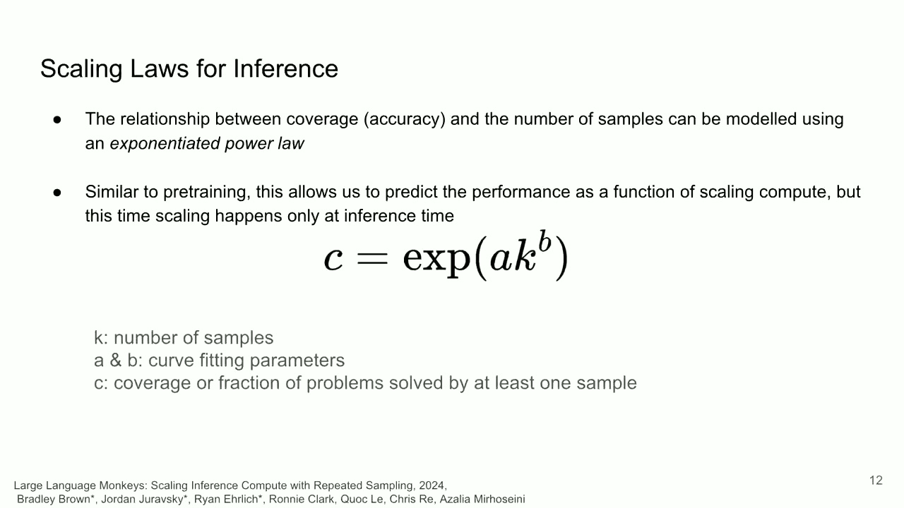
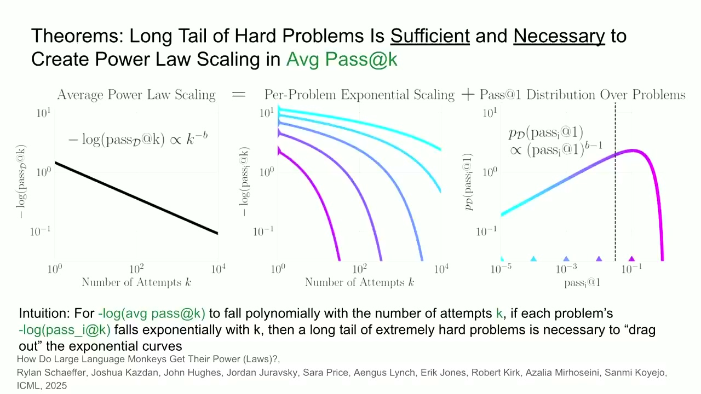
知识块 02
假设模型生成了 100 份答案，其中确实有一份正确。只有把这一份找出来并交给用户，系统才算真正答对。前一块只问“正确答案有没有出现”；这一块问“系统能不能认出它”。
pass@1系统最后交出一份答案时，答对的比例pass@k生成 k 份答案，其中至少有一份正确的比例best-of-N先生成 N 份答案，再由评分器挑一份majority@N选择出现次数最多的答案，也就是多数投票数学证明可以交给证明检查器；代码可以运行单元测试；把 PyTorch 程序改写成 CUDA 时，可以比较两段程序对同一输入是否给出相同结果。只要检查比重新生成更便宜、更可靠，系统就能不断生成答案并迅速淘汰错误答案。
但测试也会出错。SWE-bench Lite 中有 11.3% 的问题存在结果不稳定的测试；CodeContests 中，122 道题里有 35 道会把官方正确的 Python 解拒绝掉。因此，检查器本身也需要被检查。
论文用一个假想裁判计算理论上限：它提前知道标准答案，所以只要候选里出现过正确答案，就一定能挑出来。这个裁判叫 oracle，真实系统无法使用。实验中，候选里出现正确答案的比例还在上升，但多数投票和评分器挑选的最终准确率很快不再提高。答案越多，里面虽然可能多出几个稀有的正确答案，也同时多出大量很像真的错误答案。
多数投票假设：出现次数最多的答案最可能正确。困难题往往正好相反。模型可能把同一个错误答案重复几千次，而正确答案只偶尔出现一两次。此时增加生成次数，只会让错误答案以更大的票数获胜。
课堂讨论提出了几种办法：让模型修改旧答案、先检索资料、用多个评分器共同判断，以及提高测试覆盖率。老师把这些想法归成两类：生成答案时不要只会从头重来；检查答案时也不要只依赖一个不可靠的分数。
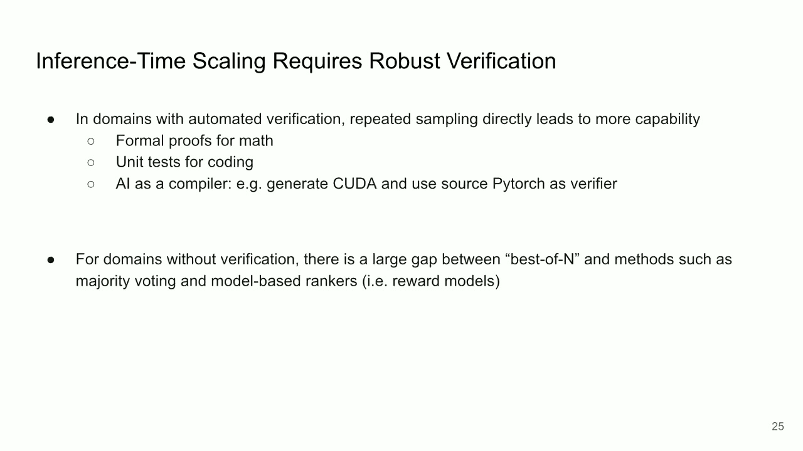
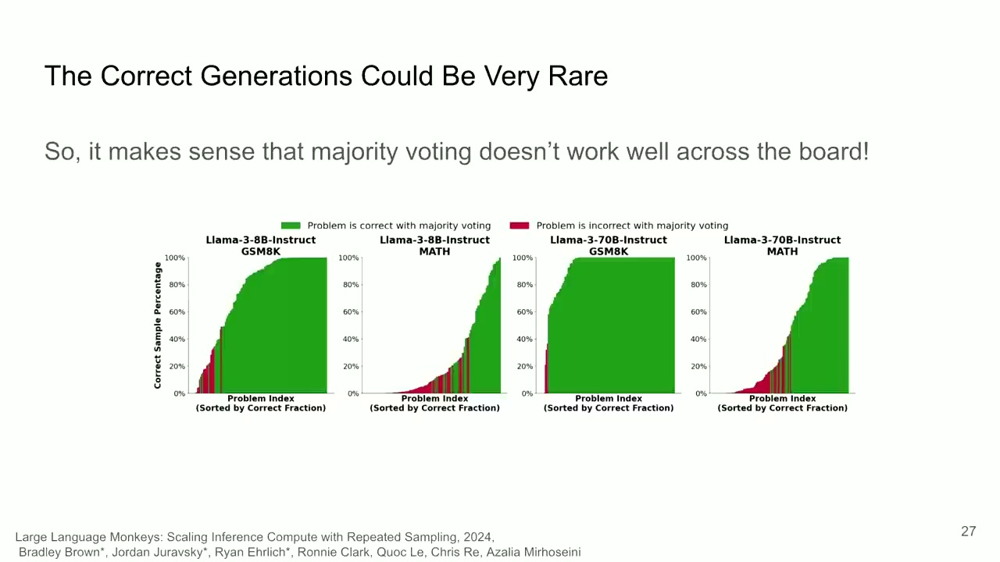
知识块 03
多给模型一些计算量，不等于让它随便多写。假设一道题最多允许调用模型 N 次，我们要决定：同时尝试更多解法，还是反复修改同一份答案；什么时候放弃一条走不通的路线；最后由谁判断哪份答案最好。
并行采样（parallel sampling）是让模型从头独立作答多次，好比让多名学生分别解题。它能覆盖更多思路，而且一份答案走错不会拖累其他答案。顺序修订（sequential revision）是让模型在上一版答案上继续检查和修改，好比一名学生反复改稿。它能利用前一轮反馈，但如果最初方向就错了，也可能越改越偏。
课程把“尝试多少条独立路线”称为搜索宽度，把“沿同一条路线修改多少轮”称为搜索深度。现在的推理模型已经学会了一部分自我检查和改写行为，但这不保证每次修改都会变好。
结果奖励模型（Outcome Reward Model，ORM）只看完整答案，适合“生成 N 份，再挑一份”。过程奖励模型（Process Reward Model，PRM）会给每个完整的推理步骤打分。这样，搜索还没结束时就能淘汰明显走偏的路线，只保留最有希望的几条继续展开，这叫束搜索（beam search）。
老师特别说明：PRM 通常按“推理步骤”评分，不是每生成一个 token 就评一次。它换到训练材料之外的问题上是否仍然可靠，需要单独验证。
所谓“计算最优”（compute-optimal），不是找到一套永远最好的固定流程，而是在同样预算下，根据题目难度选择更划算的做法。较简单的题通常已经有一条接近正确的路线，继续修改可能更有效；较难的题更需要同时尝试不同思路；最难的题上，基础模型几乎从不产生正确方向，多搜索和多修改都可能无济于事。
在 PaLM 2-S* 解 MATH 的这组实验里，按难度选择搜索或修订策略，生成约 16 份答案，就能达到或超过普通方法生成 64 份答案的效果。因此，4 倍是这组设置里的最好结果，不是换一个模型或任务也必然成立的常数。
如果基础模型偶尔能把题做对，多给它几次尝试，再用可靠的检查器挑选，可能比只调用一次约 14 倍规模的模型更有效。但如果基础模型几乎从来想不到正确路线，搜索就没有东西可以放大，此时应先增强基础模型。
成本比较还要考虑使用次数。训练虽然昂贵，但训练好的模型可以服务大量请求；答题时增加计算量，则会在每次请求中重新发生。因此，不能把训练用的计算量和一次回答产生的 token 简单地一比一交换。
θ 代表整套做法，例如生成几份答案、修改几轮、用哪个评分器、每轮保留几条路线。比如预算允许调用模型 16 次，可以比较“生成 16 份答案”和“生成 4 份、每份修改 3 轮”哪种成功率更高。arg max 就是找出成功率最大的选择。前提是我们能可靠估计这些策略的成功率；这条公式本身不能保证估计结果正确。
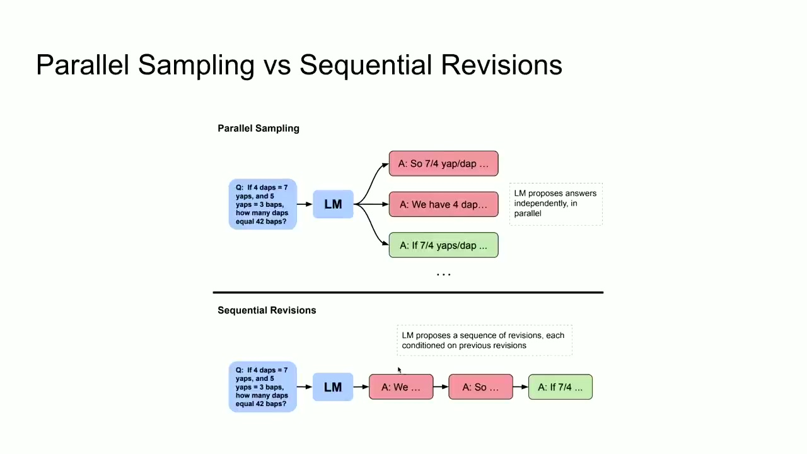
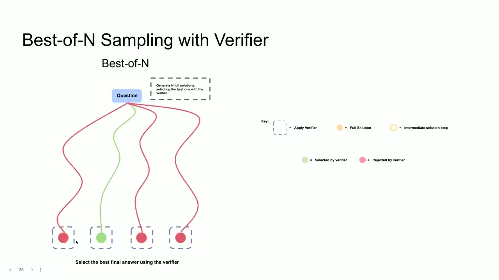
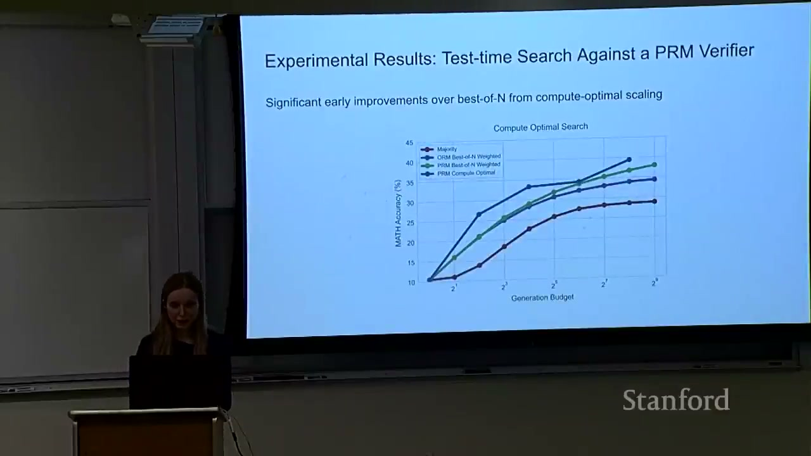
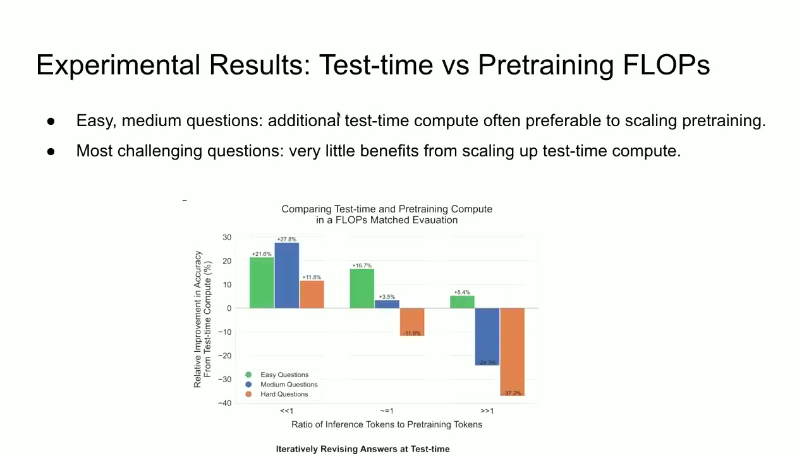
知识块 04
上一块由研究者手工比较几种办法。Archon 再向前一步：把可用模型和操作当成积木，自动尝试“先生成、再批评、再排序、再融合”等组合，找出在指定测试集和预算下表现最好的一条答题流水线。它不修改模型参数，只改变调用模型的顺序和次数。论文把这条流水线称为推理时架构（inference-time architecture）。
使用 Archon 时，要先给出四样东西：用哪套测试题评估，允许调用哪些大语言模型，可以使用哪些操作，以及每道题最多调用模型多少次。优化器会在开发集上试跑多种组合，最后输出一张固定流程图，后面的新问题都照这张图执行。这个搜索过程叫 ITAS，全称 Inference-Time Architecture Search，即“推理时架构搜索”。
| 操作 | 作用 | 风险 |
|---|---|---|
| Generator 生成器 | 提出一份或多份答案 | 不同答案可能大同小异，并重复同一种错误 |
| Critic 批评器 | 指出答案的缺陷、遗漏和可取之处 | 批评本身也可能判断错误 |
| Ranker 排序器 | 把答案从好到坏排序 | 可能偏爱特定位置、长度或写作风格 |
| Fuser 融合器 | 参考多份答案，重新写一份综合答案 | 可能合并优点，也可能把几种错误拼在一起 |
| Verifier 验证器 | 判断答案和理由是否可信 | 遇到陌生问题可能失准，也可能被答案钻空子 |
| Unit tests 检查项 | 列出检查条件，再逐项检查答案 | 检查项可能不全，关键要求也可能被漏掉 |
理想选择器（oracle selection）提前知道标准答案，但它只能从现有答案中挑一份。融合器（fuser）做的事不同：它读取几份各有缺漏的答案，再写出一份新的答案。新答案可能保留甲的正确推理，又补上乙注意到的细节，所以分数可以高于原来任何一份。这没有突破理论上限，只是新增了一份原本不存在的候选。
总结、写作和一般问答往往没有可以直接运行的标准答案。Archon 会先把要求拆成自然语言检查项，再让模型逐项判断答案是否满足。例如，“括号是否成对”可以拆成数量是否一致、嵌套顺序是否正确等条件。
系统还可以重复多轮“批评—排序—融合”，让答案逐步改进。论文把这种多轮流程类比为更深的网络，但实验表明：多加一层不一定更好，结果取决于具体任务。
模型、操作、层数和顺序组合起来，共有约 9,576 种有效配置，逐个试跑成本太高。Archon 先排除明显不合理的流程：第一步必须先生成答案；批评要发生在排序或融合之前；生成检查项后必须紧接着执行检查。
然后使用贝叶斯优化：根据已经试过的组合和得分，推测下一批最值得测试的组合，从而减少昂贵的真实模型调用。
课程录像引用的是旧版结果：在当时的实验口径下，Archon 相对 GPT-4o 和 Claude 3.5 Sonnet 平均高 14.1%。目前可获得的 Archon v6 换了分组方式：只看闭源系统时平均高 15.1%；把开源和闭源系统一起比较时，相对当时最强的单次调用方案平均高 10.9%。这些数字只描述论文使用的模型、六个测试集和指定调用预算，不能直接套到 2026 年的新模型上。
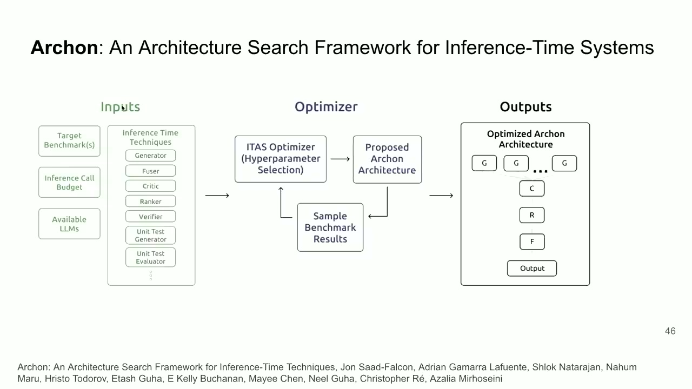
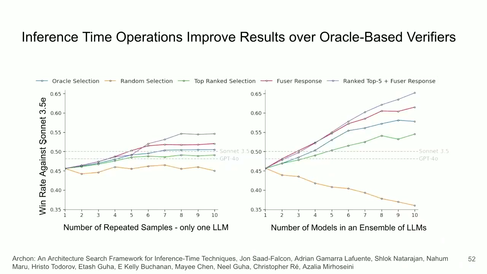
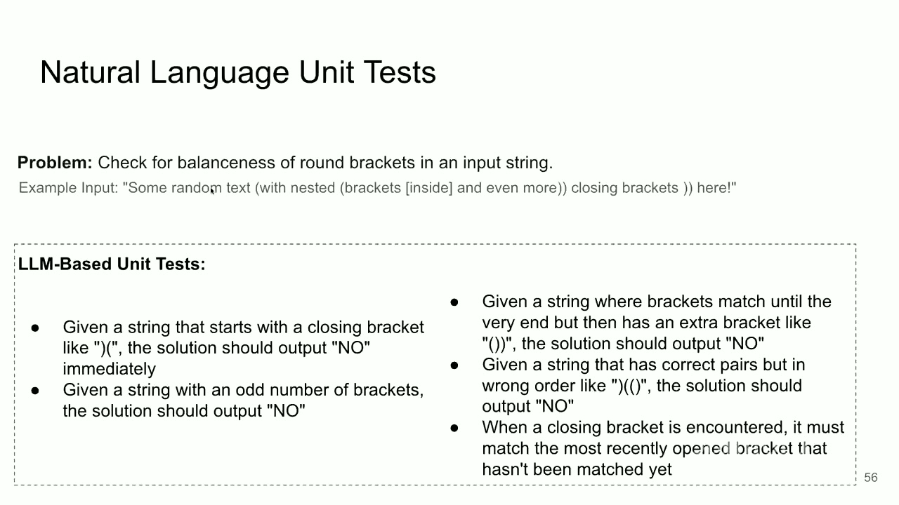
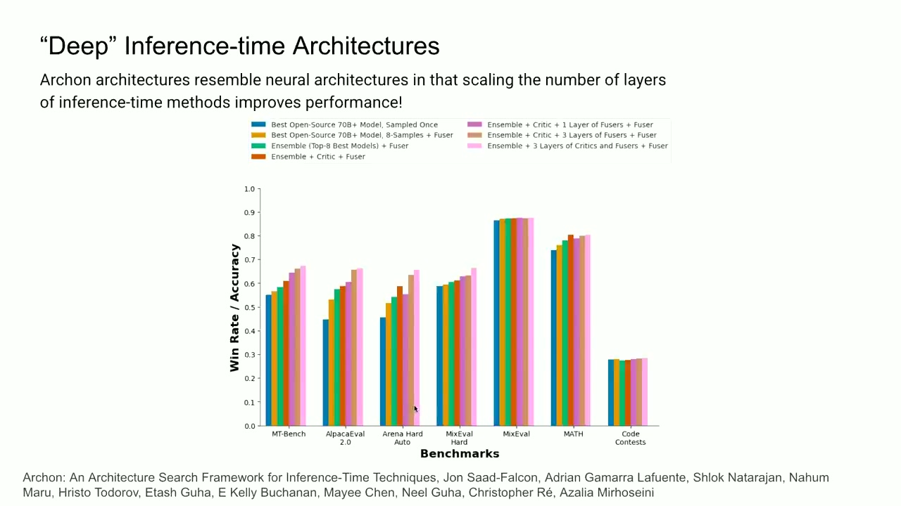
字幕纠错
自动字幕经常把模型名、缩写和数字听错。正文已经按论文和上下文改正，这里保留几处容易误导理解的例子。
课后测试
本页不显示答案。答完后复制选项，再提交评分。
视频逐字稿
内容来自视频英文字幕，并保留时间戳。字幕只做了去标签和分段；术语、公式和数字的修正以正文为准。
参考资料